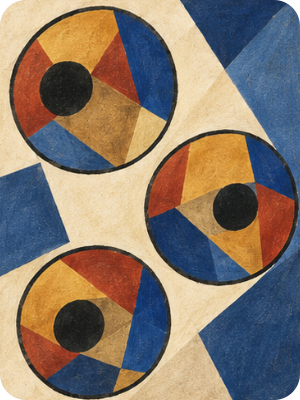
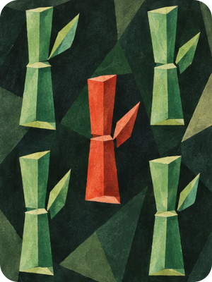
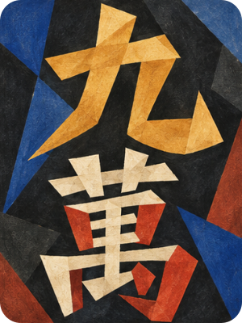
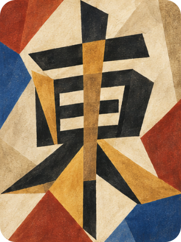
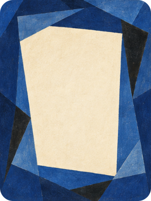
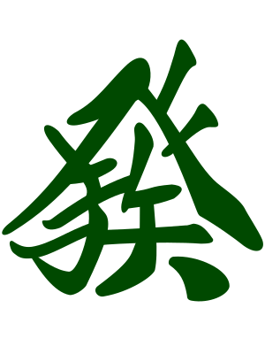

Cubist
Five approved faces from Further Studies. Select Options → Tile face → Cubist in the game. The remaining tiles use Classic artwork.
Approved artwork





A mixed hand



The last four tiles demonstrate Classic artwork for identities awaiting Cubist approval. Green dragon F is excluded. The white dragon keeps its blank centre when dora; it receives the normal red ring and foil sheen.
The exact selected source pixels are preserved in lossless PNG crops. SVG wrappers use the shared 300 × 400 canvas and rounded clipping. Export manifest